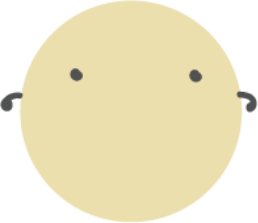

<app-breadcrumb
  [breadcrumbContent]="breadcrumbContent"
  [themeColor]="themeColor">
</app-breadcrumb>
<div class="row" style="padding-top: 100px; height:60vh">
  <div class="col-2 nopadding h-100">
    <svg class="timeline-area" height="100%">
      <line class="vert-line" fill="none" x1="75%" y1="13" x2="75%" y2="269"></line>
      <circle class="dot" cx="75%" cy="13" r="8"></circle>
      <circle class="dot" cx="75%" cy="165" r="8"></circle>
      <circle class="dot" cx="75%" cy="269" r="8"></circle>
    </svg>
  </div>
  <div class="col-10 about-area">
    <h5>短期：提供、維護與推廣Web教學資源</h5>
    <div class="mb-4">
      - 分析：現有資源盤點、基於專業領域、時空、社會背景了解目前情境與挑戰<br>
      - 規畫：參考課綱、參考課程地圖<br>
      - 研發：課程模組、實作練習 (Lab)、教學工具<br>
      - 改善：審查、試教與改進
    </div>
    <h5>中期：經營教師社群</h5>
    <div class="mb-4">
      - 促進Web領域師資經驗分享與交流<br>
      - 創新教學教法與經驗匯整
    </div>
    <h5>長期：促進共創與典範移轉</h5>
    <div class="mb-4">
      - 建立教材模組共創演進生態系統，使教材不斷成長改善<br>
      - 搜集成功案例並進行推廣
    </div>
  </div>
</div>
